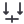
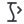
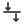
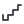

Knoop
fem.nodePunt met twee assen
Iedere kaart toont het icoon op 16, 24 en 32 px. 13 betekenissen hebben een aparte vereenvoudigde 16 px-variant. Dit zijn 109 unieke vectorconcepten, nog geen goedgekeurde definitieve set. Een bronkandidaat betekent alleen een naamovereenkomst; de betekenis moet visueel worden beoordeeld.
fem.nodePunt met twee assen
fem.beamLijn tussen twee knopen
fem.columnVerticale staaf met eindknopen
fem.plateVlak met vier hoekknopen
fem.shellGebogen vlak met knopen
fem.solidKubus met hoekknopen
fem.trussDriehoekig staafverband
fem.rigid-linkDubbele verbinding tussen knopen
fem.offsetVerschoven staafas met korte maatlijn
fem.local-axesDrie gelabelde lokale assen
fem.sectionI-profiel
fem.materialGearceerd doorsnedevlak
fem.fixed-supportStaaf tegen gearceerde vaste wand
fem.pinned-supportDriehoek onder knoop, zonder rollen
fem.roller-supportDriehoek met twee kleine rollen
fem.spring-supportZigzagveer op vaste basis
fem.rotational-springSpiraal bij eindknoop
fem.releaseOpen cirkel bij staafeinde
fem.prescribed-displacementKnoop met verplaatsingspijl en vaste referentielijn
fem.diaphragmVlak met verbonden hoekknopen
fem.contactTwee gescheiden vlakken met normaalpijlen
fem.point-loadEnkele pijl op knoop
fem.line-loadDrie gelijke pijlen op staaf
fem.surface-loadVier pijlen op vlak
fem.momentRonde pijl rond knoop
fem.self-weightVolume met neerwaartse pijl
fem.thermal-loadStaaf met thermometer
fem.settlementOplegging met neerwaartse maatpijl
fem.load-caseLastpijl met tabblad

fem.load-combinationTwee lastpijlen met plusteken
fem.moving-loadLastpijl boven spoor met richting
fem.wind-loadHorizontale pijlen op gevel
fem.massBlok met centraal massapunt
fem.meshVlak verdeeld in driehoeken
fem.mesh-refineGrove driehoek met kleinere onderverdeling
fem.mesh-qualityDriehoeknet met controleteken
fem.solve-linearConstructie met startdriehoek
fem.solve-nonlinearGebogen responslijn met startdriehoek

fem.bucklingRechte en uitgeknikte kolom
fem.modalTwee slingerende modale lijnen
fem.convergenceCurve die naar horizontale lijn nadert
fem.stop-solverStopvierkant binnen rekenkader
fem.deformationRechte stippellijn plus gebogen lijn
fem.reactionOpwaartse pijl bij oplegging
fem.normal-forceStaaf met tegengestelde axiale pijlen

fem.shear-forceStaaf met tegengestelde dwarsrichtingen
fem.bending-momentStaaf met parabooldiagram
fem.torsionStaaf met rotatiepijl
fem.stressVlak met contourlijnen
fem.utilizationDoorsnede met begrensde maatindicator
fem.envelopeBoven- en ondercurve
fem.result-probeMeetpunt op contourvlak
bim.siteHoogtelijnen met terreinpunt
bim.buildingVolume met verdiepingstrepen
bim.storeyDrie gestapelde vlakken, één geselecteerd
bim.gridTwee assen met eindbollen
bim.levelHorizontale peillijn met ronde datumkop
bim.survey-pointLocatiepin met centrale meetpuntstip
bim.project-originDrie assen met centrale oorsprong
bim.link-modelTwee modelkubussen met schakel
bim.federateMeerdere transparante kubussen
bim.wallVerticaal vlak met dikte
bim.curtain-wallVerticaal vlak met stijlen en regels
bim.slabDun horizontaal volume
bim.roofHellend dakvlak
bim.doorDeurblad met draaisector
bim.windowKozijn met glasverdeling
bim.beamLiggend rechthoekig profiel
bim.columnStaand rechthoekig profiel
bim.footingVerbrede voet onder kolom
bim.pileSlank verticaal volume in grondlijn

bim.stairOpeenvolgende treden met looprichting
bim.rampHellend vlak met richting
bim.railingHandregel op staanders
bim.openingVlak met uitgesneden rechthoek
bim.spaceOmsloten plattegrond met ruimtemarkering
bim.zoneTwee ruimten binnen gemeenschappelijke contour
bim.site-elementKlein object op terreinvlak
bim.joinTwee aansluitende volumes
bim.unjoinTwee gescheiden volumes
bim.trimKruisende lijnen met verwijderde overmaat
bim.extendKorte lijn verlengd tot begrenzing
bim.alignTwee objecten aan referentielijn
bim.offsetTwee evenwijdige wanden met afstand
bim.arrayDrie gelijke objecten met richting
bim.mirrorTwee vormen rond symmetrieas
bim.typeTwee gelijke objecten met typekaart
bim.instanceEén object met eigen label
bim.property-setTabelkaart aan object
bim.classificationHiërarchische labels
bim.material-layersDrie doorsnedelagen
bim.quantityObject met maatlijnen en somteken
bim.phasingTwee bouwfasen op tijdlijn
bim.planBovenaanzicht met snijlijn
bim.sectionSnijvlak door volume
bim.elevationGevelvlak met kijkrichting
bim.sheetBlad met kader en onderhoekstempel
bim.viewportKader binnen tekenblad
bim.dimensionMaatlijn met twee getuigenlijnen
bim.tagObject met verbonden label
bim.scheduleTabel met objectkolom
bim.detailVergroot kader met aansluitlijn
bim.clashTwee elkaar doorsnijdende volumes
bim.clearanceObject met afstandscontour
bim.bcf-issueModel met tekstballon
bim.ids-checkEigenschappenkaart met checklist
bim.ifc-exportGebouw met uitgaande pijl
bim.revisionTwee modelcontouren met verschilmarkering
bim.section-boxKubus met afgesneden hoek